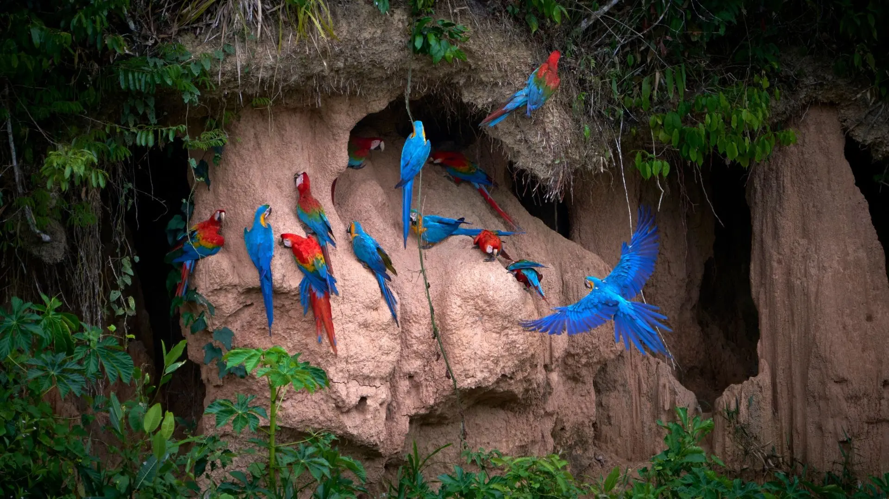
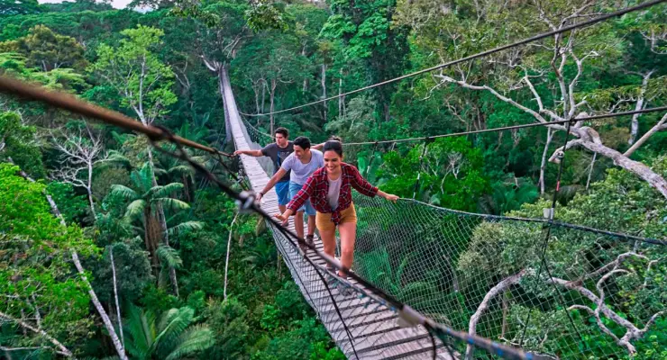
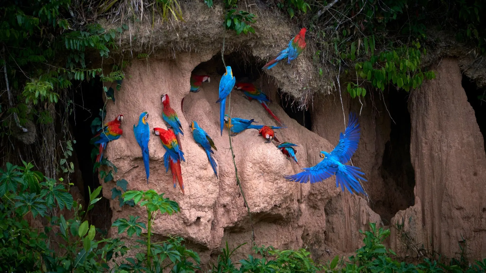
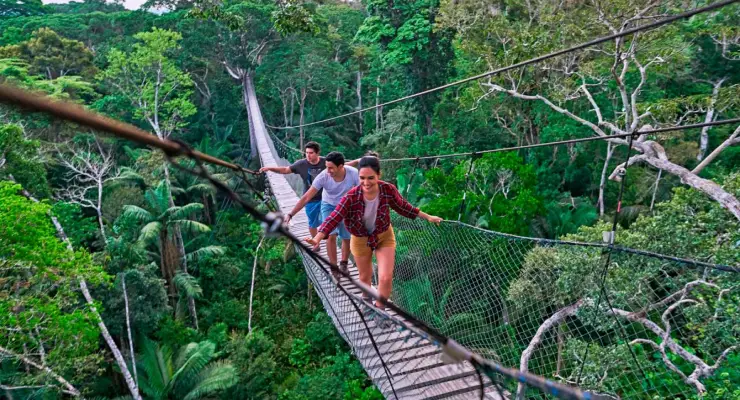

Reserva Nacional de Tambopata: Un tesoro natural en la Amazonía peruana
La Reserva Nacional de Tambopata es una de las áreas protegidas más biodiversas del mundo, ubicada en la región de Madre de Dios, en la Amazonía peruana. Es el destino perfecto para los amantes de la naturaleza, con una asombrosa variedad de flora y fauna, ríos majestuosos y paisajes inolvidables.
Historia
La Reserva Nacional de Tambopata fue creada en el año 2000 con el objetivo de conservar los ecosistemas amazónicos y proteger la vida silvestre. Es hogar de especies emblemáticas como el jaguar, el guacamayo rojo y el lobo de río. Además, es un importante refugio para comunidades indígenas y un destino ecoturístico reconocido a nivel mundial.
 



Horarios y Ubicación
- Ubicación: Reserva Nacional de Tambopata, Puerto Maldonado, región de Madre de Dios, Perú.
- Horarios de visita: Todos los días de 6:00 a.m. a 5:00 p.m.
- Costo de entrada: Varía según la actividad y la agencia de turismo.
Consejos para Visitantes
- Lleva repelente de insectos: La selva es hogar de muchos insectos, por lo que es esencial protegerse.
- Usa ropa ligera y de manga larga: Ayuda a evitar picaduras y protege del sol.
- Explora con guías locales: Ellos conocen los mejores lugares y garantizan una experiencia segura.
- Lleva una cámara: No querrás perderte la oportunidad de capturar la belleza de la fauna y flora amazónica.
- Respeta el entorno: No dejes basura ni alteres el hábitat natural de los animales.